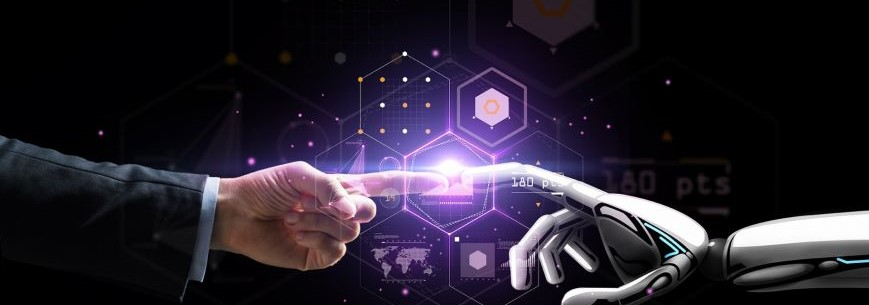

Портал Робототехника
Основная цель создания роботов – избавление человека от выполнения тяжелой, опасной или рутинной работы. Попросту говоря, это помощь: устройства должны не заменить человека полностью, но освободить его мысли и руки от монотонной работы.
Промышленные роботы
Промышленный рообот — предназначенный для выполнения двигательных и управляющих функций в производственном процессе манипуляционных робот, т. е. автоматическое устройство, состоящее из манипулятора и перепрограммируемого устройства управления, которое формирует управляющие воздействия, задающие требуемые движения исполнительных органов манипулятора.
Роботы-Андроиды
Андроид (от греч. ἀνήρ «человек, мужчина» + суффикса -oid «подобие» — человекоподобный или антропоморфный) — робот-гуманоид или синтетический организм, предназначенный для того, чтобы выглядеть и действовать наподобие человека. Такой робот может оснащаться органами биологического происхождения, либо другими, не уступающими по функциональности и внешнему виду.
Бытовые роботы
Бытовой робот — робот, предназначенный для помощи человеку в повседневной жизни. Сейчас распространение бытовых роботов невелико, однако футурологи предполагают широкое их распространение в обозримом будущем. В 2007 году Билл Гейтс опубликовал статью «Робот в каждом доме» о значительном потенциале роботов (включая домашних или бытовых роботов) для социума.